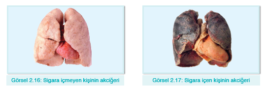
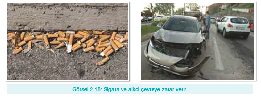

Obezite
Günümüzde birçok insan çeşitli sağlık sorunlarıyla uğraşmaktadır. Bu sorunların büyük bir kısmı sağlıksız beslenmeden kaynaklanır. Son yıllarda yapılan araştırmalar beslenme alışkanlıklarının sağlığı önemli ölçüde etkilediğini göstermektedir.
Yanlış beslenme alışkanlığına bağlı olarak gelişen hastalıklardan biri obezitedir. Obezite, bir kişinin hastalık derecesinde şişmanlamasıdır. Hamburger ve pizza gibi yiyeceklerin çok tüketilmesi, öğünlerin atlanması ve uygun zamanda yenmemesi, karbonhidrat, şeker ve yağ içeren besinlerin aşırı tüketilmesi obezitenin nedenlerindendir. Ayrıca yeterince fiziksel aktivite yapılmaması, kalıtsal özellikler ve bazı hormonların çalışmasının aksaması da obeziteye neden olmaktadır.
Vücudun gereksinim duyduğu besin miktarlarından fazlasının tüketilmesi bazı olumsuz etkilere neden olur. Bunların başında; fiziksel aktivitelerin kısıtlanması, kalp ve damar hastalıkları, sindirim bozuklukları yer alır.
Obezitenin bir başka olumsuz etkisi besin israfıdır. İhtiyaç duyulmadığı hâlde tüketilen besinler besin israfına neden olur. Dünya’nın birçok ülkesinde yiyecek bulma sıkıntısı yaşayan insanların olduğu düşünüldüğünde besin israfının önemi daha iyi anlaşılacaktır.
Beslenme alışkanlıklarını düzenleyerek ve düzenli egzersiz yaparak obezitenin önüne geçilebilir. Besinler, ihtiyaç sahipleriyle paylaşılabilir. Böylece israf önlenmiş ve toplumsal dayanışma güçlenmiş olur.
Aşağıdaki resimleri inceleyelim. Sigara içen ve içmeyen kişilere ait akciğerler arasında nasıl bir fark var? Hangi akciğerin, görevini daha rahat yapabileceğini belirtelim.
Havayı içimize çektiğimizde akciğerlerimiz, oksijenin vücudumuza girmesini sağlar. Soluduğumuz havanın temiz olması vücudumuz için önemlidir. Sigara, solunan havayı kirletir ve sağlıklı soluk alınmasını zorlaştırır. Sigaranın içindeki zehirli maddeler akciğerler üzerinde birikerek normalde pembemsi bir rengi olan akciğerlerin kararmasına neden olabilir.
Ülkemizde birçok alanda “Dumansız Hava Sahası” projesi kapsamında sigara içmek yasaklanmıştır. Böylece sigara içmeyen kişilerin dumandan etkilenmesi büyük ölçüde engellenmiştir.
Sigara ve alkol kullanımı sadece vücuda mı zarar verir? Bu maddelerin çevreye de zararları olup olmadığını tartışalım.
Sigara ve alkol kullanımı sadece onu kullananlara değil, çevreye de ciddi zararlar verir. Örneğin, alkollü bir sürücünün neden olduğu trafik kazasında çeşitli yaralanmalar oluşabileceği gibi maddi hasarlar da meydana gelebilir. Sigaradan çıkan zehirli duman hem havayı kirletir hem de bu havayı soluyan canlıların sağlığını olumsuz etkiler. Ayrıca sigara izmariti, paket atıkları ve alkol şişeleri çevreyi kirletir. Söndürülmeden atılan sigara ve rastgele atılan şişe kırıkları orman yangınlarına neden olabilir.
Sigara ve alkolün zararlarından korunmak için bu maddelerden ve bunların kullanıldığı ortamlardan uzak durulmalıdır. Ayrıca çeşitli spor faaliyetlerine katılmak; müzik,resim gibi uğraşlar edinmek; çevre gezileri yapmak, sevdiklerimizle vakit geçirmek hem boş zamanları değerlendirmede hem de zararlı alışkanlıkları önlemede çok etkilidir.